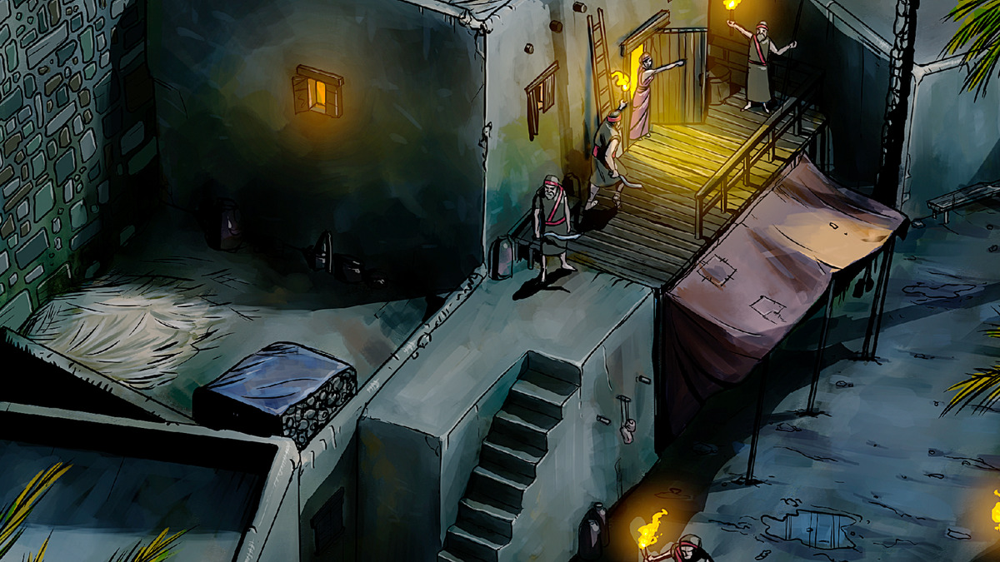

14 Raabe · semana de 26 de outubro a 1.º de novembro de 2026
Ela escolheu o lado de Jeová
Leia o relato na Bíblia: Josué 2:1-24; 5:1; 6:14-25; Hebreus 11:30, 31; Tiago 2:24, 25
Tempo do estudo: 30 minutos (parte 8 da reunião)
Cada parágrafo traz o conteúdo resumido, com as frases citadas do capítulo, os textos bíblicos escritos e um comentário pronto. O texto oficial completo está no jw.org e no JW Library: cada parágrafo tem um link direto.
Raabe morava numa casa que ficava na muralha de Jericó. Ela era prostituta. Da janela, podia ver uma região bonita e ensolarada, uma ‘cidade de palmeiras’. Mas, andando pela cidade, via o medo estampado no rosto das pessoas. Todos sabiam que Jeová estava com Israel e que eles mesmos seriam destruídos. E eles mereciam.
O povo de Jericó tinha motivos para ter medo. Pouco tempo antes, Jeová tinha ajudado Israel a vencer os reis de Siom e Ogue, que tinham exércitos poderosos, e os israelitas nem eram soldados. E, 40 anos antes, Jeová tinha destruído o exército de Faraó no mar Vermelho. Agora Israel estava acampado perto de Jericó, pronto para trazer a punição de Jeová por todas as coisas ruins que aquele povo fazia.
Raabe sabia que seu povo praticava muitas coisas erradas. Ela mesma levava uma vida humilhante como prostituta e, com certeza, desejava algo melhor. Mas o que Raabe ouviu sobre Jeová encheu seu coração não de medo, mas de esperança. Ela viu que Jeová era um Deus que protegia seu povo e o tratava com dignidade, bem diferente dos deuses falsos dos cananeus. Um Deus justo, puro e protetor. Era esse o Deus que ela queria adorar.
Uma noite, dois homens bateram em sua porta procurando um lugar para ficar. Raabe logo percebeu quem eles eram: espiões israelitas! O rei de Jericó também ficou sabendo, e mandou homens até a casa dela exigir que os espiões fossem entregues. Era uma decisão que ia mudar a vida dela. Que lado ela iria escolher? O das pessoas más da sua cidade ou o de Jeová?
Com coragem, Raabe escolheu o lado de Jeová. Escondeu os espiões no terraço e despistou os homens do rei. Depois subiu e explicou aos espiões por que tinha feito aquilo: “Sei que Jeová lhes dará esta terra.” Ela também contou que as pessoas de Jericó estavam com medo dos israelitas. E implorou que os espiões a protegessem quando Jeová fizesse Israel destruir a cidade.
O que ajudou uma prostituta a ficar do lado de Jeová e abandonar uma vida imoral?
Raabe tinha salvado a vida dos espiões, e eles viram que ela tinha escolhido o lado de Jeová. Então concordaram: ela e a família seriam poupados. Mas ela devia manter em segredo onde os espiões estavam, pendurar uma corda escarlate em sua janela na muralha e ficar dentro de sua casa durante a batalha. Assim, ela e os de sua casa seriam protegidos.
Raabe fez os homens descer por uma corda pendurada na janela e os ajudou a escapar. Depois amarrou a corda escarlate na janela e não contou para ninguém a missão dos espiões. Isso exigiu coragem: se a cidade descobrisse, ela corria o risco de sofrer uma morte horrível. Ela também manteve a família dentro de casa. Quando Jeová parou as águas do rio Jordão, Raabe teve ainda mais certeza de que tinha decidido certo. Nos sete dias de marcha, o clima dentro das muralhas deve ter sido tenso. No sétimo dia, as buzinas tocaram, o povo gritou, e as muralhas caíram! Raabe e a família estavam protegidos dentro de casa.
Depois da batalha, os espiões levaram Raabe e a família para fora. A casa dela ficava na única parte da muralha que continuou de pé. Como Josué tinha ordenado, todos foram salvos. Com o tempo, Raabe passou a fazer parte da nação de Israel. Ela se casou com um israelita e teve filhos. Séculos mais tarde, da família dela veio o homem mais corajoso que já existiu: Jesus Cristo. Raabe foi muito abençoada por sua fé e coragem.
Para considerar
De que maneiras Raabe mostrou coragem?
Meu comentário comentário base
Do Guia de Pesquisa Josué 2:4, 5
- it “Raabe” n.º 1 § 3: ela escondeu os homens entre as hastes de linho e mandou as autoridades em outra direção sem despertar suspeitas. “Raabe demonstrou maior devoção ao Deus de Israel do que à sua própria comunidade condenada.”
- w13 1/11 p. 14: “Usando essa estratégia simples, ela despistou assassinos que não tinham o direito de saber a verdade e salvou a vida dos servos de Jeová.”
- O Guia ainda indica, no tema coragem: “Seja corajoso e faça seu melhor” (w17.09 p. 29 § 7) e “Seja corajoso, Jeová está com você!” (w13 15/1 p. 9).
Analise mais a fundo
1. Como era a vida de Raabe em Jericó?
(w13 1/11 12 § 4 a 13 § 1)
Meu comentário comentário base
Do Guia de Pesquisa Josué 2:1
- it “Raabe” n.º 1 § 2: a palavra hebraica usada para ela, zoh·náh, sempre indica uma relação ilícita. Não quer dizer “dona de hospedaria”. E “entre os cananeus, a prostituição não era uma profissão mal-afamada”.
- w13 1/11 p. 13: Jeová não era indiferente ao que acontecia em Canaã, e conhecia o coração de cada pessoa. O povo de Jericó sabia que a cidade estava condenada, e “mesmo assim [...] persistia em sua maldade”.
- O Guia ainda indica it “Hospitalidade” § 23 e “Quão majestoso é o nome de Jeová!” (w86 15/12 p. 16-17).
2. Como sabemos que os espiões não tinham intenções imorais quando ficaram na casa de Raabe?
(it “Prostituta” § 16)
Meu comentário comentário base
Do Guia de Pesquisa Josué 2:1, 3
- w93 15/12 p. 24-25: “Os espiões israelitas viviam segundo a Lei de Deus, de modo que não se hospedaram na casa de Raabe com propósitos imorais.” E cita Levítico 18:24-30.
- w13 1/11 p. 13: aqueles dois queriam apenas hospedagem, e não os serviços de uma prostituta. Os espiões talvez esperassem ouvir alguma conversa útil.
3. Por que havia fileiras de hastes de linho no terraço de Raabe, e para que o linho era usado?
(it “Linho” n.º 1 §§ 1-3) A
Meu comentário comentário base
Do Guia de Pesquisa Josué 2:6
- w93 15/12 p. 24: “Raabe não era uma mulher ociosa e mimada.” Com o linho no terraço e um estoque de linha escarlate em casa, ela talvez produzisse linho e conhecesse a arte de tingir. “Raabe era uma mulher trabalhadora.”
- it “Linho” n.º 1 § 3: os hebreus provavelmente deixavam as hastes dentro da água até a parte de madeira apodrecer. Depois secavam ao sol e batiam numa pedra para soltar as fibras.
4. Por que não foi errado Raabe despistar os homens do rei?
(w04 1/12 8 § 6) B
Meu comentário comentário base
Do Guia de Pesquisa Josué 2:5
- it “Mentira” § 7: a mentira maldosa é condenada na Bíblia, mas isso “não significa que a pessoa seja obrigada a divulgar informações verídicas àqueles que não têm direito a elas”. O verbete coloca Raabe junto com Abraão, Isaque e Eliseu.
- w93 15/12 p. 25: “Deus aprovou seu proceder.” Ela se arriscou para proteger os servos de Deus, e isso mostrou a fé dela.
Medite no que aprendeu
Por que Raabe precisou de coragem para abandonar sua vida imoral e adorar a Jeová com os israelitas? O que os estudantes da Bíblia podem aprender do exemplo dela?
Meu comentário comentário base
Do Guia de Pesquisa verbete “Raabe”
- w04 1/12 p. 9: “Se você já estuda a Bíblia por algum tempo e tem percebido que vivemos ‘nos últimos dias’, não está na hora de tomar a decisão de servir a Deus?”
- it “Prostituta” § 15: existe esperança para quem larga essa prática e exerce fé. Alguns cristãos de Corinto tinham vivido assim e foram “lavados”.
- w93 15/12 p. 24: as aparências enganam, mas Deus “vê o que o coração é”, e Raabe mudou de um proceder pecaminoso para um proceder justo.
A Bíblia condena a mentira. Mas às vezes inimigos do povo de Deus podem nos pressionar a revelar informações confidenciais sobre nossos irmãos. Em casos assim, o que podemos aprender do exemplo de Raabe?
(Pro. 11:13; Ecl. 3:7; Efé. 4:25) C
Meu comentário comentário base
Do Guia de Pesquisa Eclesiastes 3:7
- w19.07 p. 11 § 14: numa proscrição, temos que reconhecer quando é “tempo para ficar calado”. Não revelamos o nome dos irmãos, os locais das reuniões, como pregamos e como recebemos publicações. “Nem mesmo para amigos ou parentes.” Se cairmos nessa armadilha, colocamos os irmãos em perigo.
- O mesmo parágrafo manda ler Salmo 39:1: “Vou guardar a minha boca com uma mordaça enquanto houver alguém mau na minha presença.”
- O Guia ainda indica “Como podemos saber o momento certo para falar?” (w20.03 p. 18-23) e “‘Fale a verdade com o seu próximo’” (w09 15/6 p. 16-20), para Efésios 4:25.
De que outras maneiras você pode imitar a coragem de Raabe?
Meu comentário comentário base
Do Guia de Pesquisa Tiago 2:25
- w23.12 p. 5 § 13: Raabe ouviu falar de Jeová e mostrou a fé com ações, protegendo dois espiões que corriam risco de vida. “O exemplo de Raabe nos ensina que a nossa fé precisa ser apoiada por obras.”
- O Guia ainda indica “A fé nos induz a agir!” (w97 15/11 p. 15 § 11) e it “Declarar justo” § 5.
Pense no quadro completo
O que esse relato me ensina sobre Jeová?
Meu comentário comentário base
Do Guia de Pesquisa 1 Samuel 16:7
- w93 15/12 p. 24: “Ter Jeová usado uma meretriz demonstra sua grande misericórdia.”
- w09 15/5 p. 7: o desmoronamento da muralha estava fora do controle humano. “Milagrosamente, porém, o desmoronamento parou na casa de Raabe.”
Como esse relato está relacionado com o propósito de Jeová?
Meu comentário comentário base
Da Bíblia de estudo Mateus 1:3, 5
- Nota de estudo de Mateus 1:3: Mateus cita só cinco mulheres na genealogia: Tamar, Raabe, Rute, Bate-Seba e Maria. Raabe e Rute não eram israelitas. “Provavelmente elas foram incluídas porque cada uma delas se tornou antepassada de Jesus de um modo incomum.”
- w93 15/12 p. 25: Salmom era filho de Nasom, líder da tribo de Judá no deserto. Rute 4:20-22.
O que eu gostaria de perguntar para Raabe quando ela for ressuscitada?
Meu comentário comentário base
Aprenda mais
O que a história de Raabe nos ensina sobre como sobreviver ao dia de Jeová?
“Onde você deverá estar quando vier o fim?” (w09 15/5 6-8)
Meu comentário comentário base
Leia o artigo completo.
“Onde você deverá estar quando vier o fim?” (w09 15/5 6-8), no wol.jw.org.

Use esta história bíblica ilustrada para ajudar seus filhos a visualizar os eventos desse relato.
“Raabe obedece às instruções” (ijwis artigo 11), no jw.org.
Guia de Pesquisa: verbete “Raabe”
O que o Guia de Pesquisa do seu JW Library lista para Raabe, por assunto. Bom para achar um comentário diferente.
- Informações gerais: it-2 “Raabe” n.º 1 §§ 1-5; it-2 “Prostituta” § 16; “Ela foi ‘declarada justa pelas obras’” (w13 1/11 12-15); “Raabe, declarada justa por obras de fé” (w93 15/12 22-25); ijwbq artigo 161
- Para crianças: “Raabe acreditou em Jeová” (yc lição 3); “Raabe soube das notícias” (w09 1/8 24-25); lfb hist. 30
- Coragem: wcg cap. 14; w17.09 p. 29 § 7; w13 15/1 p. 9; w12 15/2 p. 11-12
- Fé: “A fé e as obras nos tornam justos” (w23.12 p. 5 § 13); w14 15/5 p. 23 § 9; w09 15/5 7-8; w03 15/1 p. 18; w03 1/11 9-10; w95 15/2 p. 11
- Obediência: “Onde você deverá estar quando vier o fim?” (w09 15/5 7-8) · Alegria: “Pertencer a Jeová, uma bondade imerecida” (w10 15/1 7-8)
Roteiro de 30 minutos
Estudo de livro, oito parágrafos e as quatro seções de pergunta. Os tempos são referência: o que passar de um item, tire do outro.
Abertura com uma pergunta
“Vocês já tiveram que escolher entre agradar a Jeová e agradar a todo mundo à sua volta?” Depois diga onde o estudo vai chegar: Raabe teve que fazer essa escolha numa noite, com os homens do rei na porta.
Leitura dos oito parágrafos
Designe um irmão. Dá para ler em dois blocos: §1 a §5, a pergunta em destaque, e §6 a §8.
Leituras bíblicas com a assistência
Josué 2:9-11, Josué 6:22, 23, 25 e Tiago 2:25. O que ela ouviu, o que Jeová fez e o que a Bíblia diz dela.
Para considerar
As maneiras de coragem. Aceite dois comentários e complete com o segredo guardado por semanas.
Analise mais a fundo, as quatro perguntas
Um comentário por pergunta. Na 3, a imagem A, do linho. Na 4, a imagem B: pergunte “o que essa imagem mostra?”.
Medite no que aprendeu
Três minutos para a coragem de deixar a vida antiga. Três para a imagem C, da irmã calada, com Eclesiastes 3:7. Dois para as outras maneiras de imitar.
Imagem principal e pergunta em destaque
Volte à imagem da corda escarlate e leia a pergunta em destaque: “O que ajudou uma prostituta a ficar do lado de Jeová?” A resposta é o §3: o que ela ouviu sobre Jeová.
Pense no quadro completo
O que aprendemos sobre Jeová e como Raabe entrou na família de Jesus.
Encerramento
Recomende “Onde você deverá estar quando vier o fim?” e a história ilustrada para as crianças. Feche com: “A casa de Raabe ficou de pé porque ela ficou do lado de Jeová.”
Se o tempo apertar
Pode cortar: a pergunta 3 de “Analise mais a fundo”, resumindo em uma frase, a leitura de Tiago 2:25 e a última pergunta do quadro completo.
Não pode faltar: o que Raabe ouviu sobre Jeová, a escolha diante dos homens do rei, a corda e a família dentro de casa, e a imagem C sobre proteger os irmãos.
Resumo: os pontos altos deste estudo
Para o encerramento, ou para revisar depois em casa.
O caminho que percorremos
- Uma cidade com medo. Jericó sabia do mar Vermelho e de Siom e Ogue. §1, §2
- O que Raabe ouviu mudou o coração dela. Esperança no lugar do medo. §3
- A hora de escolher um lado. Os espiões escondidos no linho. §4, §5
- Uma fé que obedece. Segredo, corda escarlate, família em casa. §6, §7
- Jeová recompensou a fé dela. A casa de pé e um lugar na família de Jesus. §8
Os sete pontos altos
- Todos em Jericó ouviram as mesmas notícias; só Raabe reagiu com fé.
- O que tocou Raabe foi um Deus que protege e trata as pessoas com dignidade.
- Ela decidiu rápido porque o coração já estava decidido.
- Ninguém é obrigado a dar informação a quem quer fazer mal ao povo de Deus.
- A corda ficou na janela por semanas, e o segredo também.
- A muralha caiu, mas parou de cair na casa dela.
- Uma estrangeira que tinha sido prostituta é citada na genealogia de Jesus.
Três frases para o encerramento
- “Jericó inteira ouviu falar de Jeová. Só Raabe acreditou.”
- “A casa mais perigosa da cidade virou a única casa segura.”
- “Jeová não olhou para o passado de Raabe. Olhou para a fé dela.”
Suas respostas
Cada campo já vem com um comentário pronto. O que você ajustar fica salvo automaticamente neste navegador, neste aparelho. Para levar para outro aparelho, baixe o arquivo aqui e carregue no outro lado.
O arquivo é um .json com os seus comentários e as anotações marcadas como vistas. Carregar substitui o que estiver escrito nesta página, e a página avisa antes.
Preparação baseada no capítulo 14 do livro Ande Corajosamente com Deus, “Ela escolheu o lado de Jeová”. Publicações consultadas: A Sentinela de 1/11/2013, 1/12/2004, 15/5/2009, 15/12/1993, julho de 2019 e dezembro de 2023; Estudo Perspicaz, verbetes “Prostituta”, “Linho”, “Raabe” e “Mentira”; nota de estudo de Mateus 1:3; Guia de Pesquisa do JW Library. Bíblia: Tradução do Novo Mundo da Bíblia Sagrada, wol.jw.org, com 513 versículos incluídos nesta cópia para funcionar sem internet.
Os resumos, os comentários base, as anotações e o roteiro são notas de preparação pessoal, não material publicado pelas Testemunhas de Jeová. O capítulo, as imagens e o texto da Bíblia são propriedade da Watch Tower Bible and Tract Society.